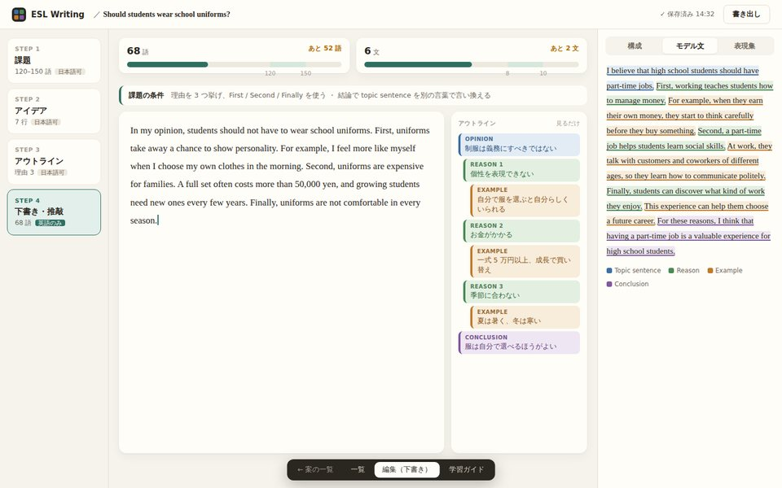

3 ペイン（左 = 段階 / 中央 = 編集 / 右 = 学習ガイド）の骨格は共通で、見た目と見せ方を変えた 4 案。 中身はすべて架空のサンプル。各案は画面下の切り替えで 一覧 / 編集（下書き）/ 学習ガイド を行き来でき、 学習ガイド画面ではタブも切り替えられる。案を組み合わせて選んでもよい。

決定 2026-11-08
案 C（ワークブック）の構成に、案 A（ノート）の暖色の紙と深緑の差し色を当てた。 マインドマップは「3. アウトライン」の編集でだけ使い、下書きの横には役割の色つきリストを出す。
決定版を開く →紙のノートに寄せた暖色のライト。落ち着いて長く書ける。
VS Code 風のダーク。daily-note と同じ手触り。
教材風。構成の 4 役割（意見 = 青 / 理由 = 緑 / 例 = 橙 / 結論 = 紫）の色をアプリ全体で通す。
書く面を一番広く。ほかは細く・畳める。白黒 + 朱の差し色。
| A ノート | B エディタ | C ワークブック | D フォーカス | |
|---|---|---|---|---|
| 明るさ | ライト（暖色） | ダーク | ライト（白 + 4 色） | ライト（白黒） |
| 段階の切り替え | 番号付きステップ + 状態 | ファイル名の並び | 大きなタイル | 数字だけのレール |
| 下書き横のアウトライン | マップの図（読み取り専用） | 字下げテキスト | 役割の色つきリスト | 目次風の字下げ（畳める） |
| 語数・文数 | 見出し横のチップ | ステータス行 | 目標の幅つきメーター | 本文下の 1 行 + 小さなバー |
| 右ペイン | 常に表示（タブ） | 常に表示（パネル） | 常に表示（セグメント） | 閉じられる |
| 一覧 | カード | 表（フォルダ名つき） | カード + 進み具合 | 1 列のリスト |
| 本文の字 | Georgia 17px | Georgia 16px | Georgia 17px | Georgia 20px |
| 実装で増えるもの | マップの読み取り専用表示 | なし（最小） | 深さ → 役割の対応づけ、進み具合の判定 | 右ペインの開閉と状態の記憶 |
見比べ方と実装上の制約は README.md にまとめてある。